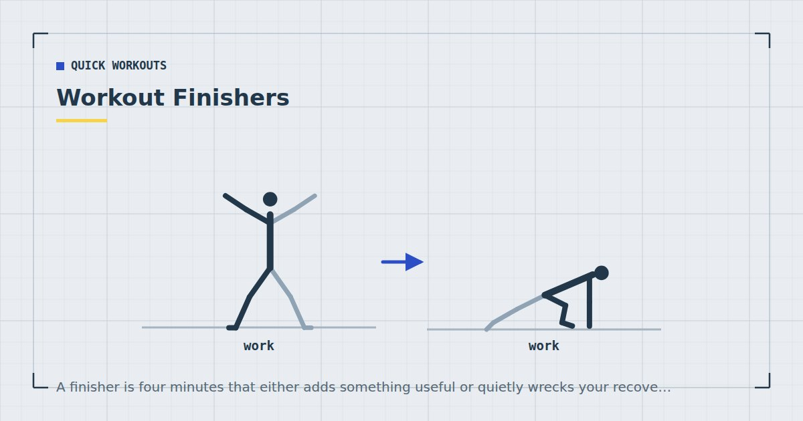

Quick Workouts & Plans
Workout Finishers: Four Minutes to End a Session Properly
A finisher is four minutes that either adds something useful or quietly wrecks your recovery. The difference is almost entirely in why you chose it.

A finisher is a short, hard block at the end of a session — typically two to five minutes, done at high effort, usually with minimal rest. They are popular because they feel like the most productive part of the workout.
Feeling productive and being productive are different things, and finishers are one of the clearer cases where they diverge. This is when they are worth doing and when they are simply fatigue you have chosen to buy.
What a finisher is for
There are only three defensible reasons to add one, and it is worth knowing which applies before you start.
Adding volume to a lagging muscle group. If your session is short and one area is under-served — usually the posterior chain or the core in home training — four extra minutes of focused work is a legitimate way to add weekly sets. Weekly volume has a dose-response relationship with growth, so genuinely additional hard sets are genuinely useful.1
Adding conditioning to a strength session. If your week contains three strength sessions and no cardiovascular work, appending four hard minutes is an efficient way to cover some of the aerobic guidance without adding a separate session.2
Psychological closure. Less rigorous, but real. Some people finish a session more satisfied and are more likely to return if it ends on something decisive. That is a legitimate reason as long as you are honest that it is the reason.
What is not a defensible reason: feeling that the session was not hard enough. That instinct is almost always about how the session felt rather than what it accomplished, and acting on it reliably leads to accumulating fatigue that degrades the following sessions.
When a finisher helps
Three conditions, and ideally all three:
The main session was short. A twenty-minute session with a four-minute finisher is still only twenty-four minutes, and the finisher is meaningfully expanding a small dose. A forty-five-minute session with a finisher on top is adding to something already at the limit of useful.
The finisher trains something the session did not. Adding four minutes of squat jumps after a leg session is piling more work onto tissue that has already been trained; adding four minutes of core work after a session that skipped it is filling a gap.
You have a rest day tomorrow. Finishers cost recovery, and the cost is easiest to absorb when the following day is light. Stacking finishers onto consecutive training days is how people end up permanently slightly fatigued.
When it does not
Skip it when you are already at the top of your recoverable volume, when the next session is tomorrow and is a hard one, when you are in a calorie deficit and recovery capacity is reduced, or when you slept badly. Sleep loss has documented effects on training performance and recovery,3 and a finisher on four hours of sleep is a bad trade in almost every case.
Skip it entirely if you are a beginner. In the first few months, the limiting factor is not how hard individual sessions are but whether they keep happening. Adding an unpleasant block to the end of every session is a reliable way to make training something you dread, which is a far worse outcome than a slightly smaller weekly volume.
A finisher is not free. It is borrowed from tomorrow's session, and whether that is a good trade depends on what tomorrow's session was going to be.
Four strength finishers
These add volume to a specific area. Use them when the session under-served something.
Glute bridge ladder — 4 minutes
Twenty glute bridges, rest fifteen seconds, eighteen, rest, sixteen, and continue down in twos until the time runs out. Each set has a one-second pause at the top. Genuinely useful for anyone who sits all day, and almost impossible to do badly.
Push-up drop set — 3 minutes
Push-ups on the floor to failure, then immediately to a chair to failure, then to a counter to failure. One pass. Each step down in difficulty lets you keep going past the point where the previous variation stopped you. Details of the incline ladder are in push-up progressions.
Split squat isometric hold — 4 minutes
Hold the bottom of a split squat for thirty seconds each leg, rest thirty, repeat four times. Uncomfortable in a very specific way and effective at building position tolerance.
Hollow hold accumulation — 4 minutes
Accumulate two minutes of hollow hold in whatever set lengths you need. If that is eight sets of fifteen seconds, that is fine. Core work responds well to accumulated time.
Four conditioning finishers
These raise heart rate. All are low-impact, so they work in a flat — see quiet home workouts if noise is a constraint.
Tabata squats — 4 minutes
Twenty seconds of continuous bodyweight squats, ten seconds rest, eight rounds. Simple, brutal, and needs no equipment or space.
Step-back lunge burnout — 3 minutes
Alternating reverse lunges, continuous, for three minutes. Pace it — the first minute should feel easy or you will not finish.
Stair intervals — 4 minutes
If you have stairs, thirty seconds up and down at pace, thirty seconds rest, four rounds. Stairs provide loading a flat floor cannot, which is the argument in stair workouts.
Mountain climber ladder — 3 minutes
Thirty seconds on, fifteen off, four rounds, slow and long rather than frantic. The slow version is quieter and demands more from the core.
Three rules for using them
One finisher per session, maximum two sessions a week. Beyond that, the accumulated fatigue starts showing up as reduced performance in the main work, which defeats the purpose.
Never let it compromise the main session. If you find yourself holding back during your working sets to save something for the finisher, the finisher is now the priority and your training has quietly reorganised itself around the least important part.
Pick it before you start, not at the end. Deciding in the moment means deciding based on how you feel, which is when the instinct to add unnecessary fatigue is strongest. Write it into the plan or leave it out.
The recovery cost nobody mentions
Four minutes sounds trivial, and in terms of time it is. In terms of recovery it is not, because finishers are performed at or near maximum effort, and effort rather than duration is what drives recovery demand.
Sets taken to failure cost meaningfully more recovery than sets stopped a few repetitions short, without a proportional increase in stimulus.4 A finisher is by definition several minutes of work at or beyond that threshold. Two finishers a week is roughly equivalent, in recovery terms, to adding a partial extra session.
That is fine if you have accounted for it. It is a problem if you have added it on top of a plan that was already at the limit and are now wondering why your numbers have stopped moving. If progress stalls and you are doing finishers most sessions, removing them is the first thing to try — ahead of adding anything.
Where to go next
If you are adding finishers because sessions feel too easy, the better fix is usually harder variations rather than more volume — see bodyweight exercise progressions. If your weekly volume genuinely needs to increase, adding a training day is a cleaner way to do it.
Frequently asked questions
What is a workout finisher?
A short, hard block at the end of a session, typically two to five minutes at high effort with minimal rest. It is used to add volume to a lagging muscle group, add conditioning to a strength session, or simply to end the workout decisively.
Are workout finishers worth doing?
Sometimes. They help when the main session was short, when they train something the session did not, and when the following day is light. They are a poor idea when you are already at the limit of what you can recover from, or when you are new to training.
How often should I do finishers?
At most two sessions a week, and never more than one per session. Because finishers are performed at or near maximum effort, their recovery cost is disproportionate to their four-minute duration.
Do finishers help build muscle?
Only if they add genuinely new hard sets rather than repeating what the session already did. Weekly volume drives growth, so four minutes of core work after a session that skipped core is useful; four minutes of squat jumps after leg day mostly adds fatigue.
Should beginners do workout finishers?
No. In the first few months the thing that determines results is whether sessions keep happening. Ending every workout with an unpleasant block makes training something to dread, which costs far more than the small extra volume gains.
Sources and further reading
- Schoenfeld BJ, Ogborn D, Krieger JW. “Dose-response relationship between weekly resistance training volume and increases in muscle mass: A systematic review and meta-analysis.” Journal of Sports Sciences, 2017;35(11):1073–1082. PubMed.
- World Health Organization. WHO Guidelines on Physical Activity and Sedentary Behaviour. 2020.
- Bonnar D, Bartel K, Kakoschke N, Lang C. “Sleep Interventions Designed to Improve Athletic Performance and Recovery: A Systematic Review of Current Approaches.” Sports Medicine, 2018;48(3):683–703. PubMed.
- Vieira AF, Umpierre D, Teodoro JL, et al. “Effects of Resistance Training Performed to Failure or Not to Failure on Muscle Strength, Hypertrophy, and Power Output: A Systematic Review With Meta-Analysis.” Journal of Strength and Conditioning Research, 2021. PubMed.
Comments
Comments are not enabled yet. Add a hosted comment embed (Disqus, Commento, Giscus) inside this container when you are ready.